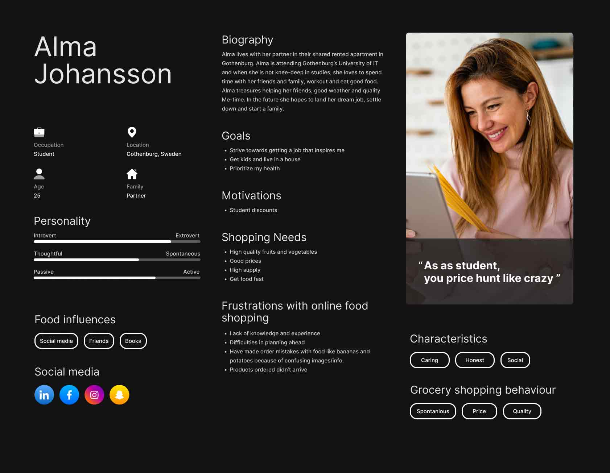

Creating a persona.

This case study aims to showcase an in-depth examination of my progress from not knowing anything about personas to receiving an assignment of creating one with a group of classmates from IT Högskolan.
This study will also thoroughly explain my initial thoughts, what I did not know before I started this project, things I could have done better and what I have learned.
This persona was part of a group assignment three of my classmates and I were given. Our job was to take on the role as UX-consultants for Willys AB and construct- and send out surveys, conduct interviews, and compile the collected information and material in a persona that aims to best portray the target audience of students, aged 20 to 30.
The goal of the persona was to portray the target audience's goals, needs and behaviours and evoke empathy in the beholder. To achieve this, we strived towards making it seem as if Alma was a real person and not just statistics and behaviors.